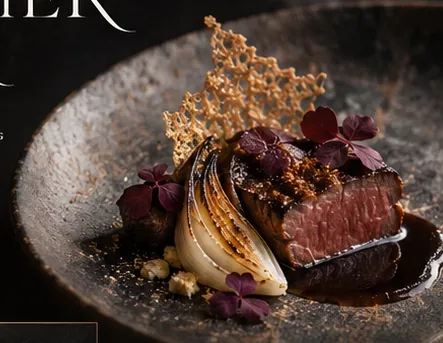

CHEF STORIES
Ask about the experience Meet the thinking behind the plate.
This is where an actual restaurant could introduce its chef, sourcing philosophy, and signature dishes.
A seasonal dining journal / Volume 01
Unhurried evenings. Inventive courses. A story told one plate at a time.
A fictional fine dining concept.

This is where an actual restaurant could introduce its chef, sourcing philosophy, and signature dishes.
The live version would connect to the restaurant’s actual reservation service.